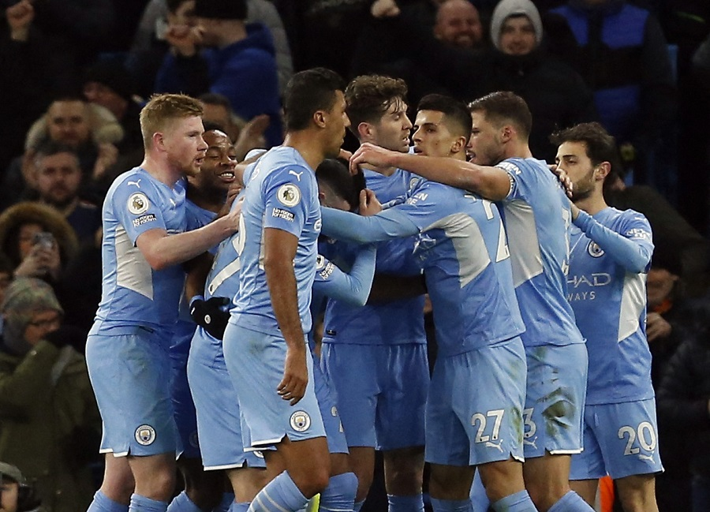

MANCHESTER City dan Liverpool adalah dua tim yang bersaing untuk menjadi juara Liga Inggris 2021-2022.
Kini, Man City duduk di puncak klasemen sementara dengan koleksi 70 poin. The Citizens unggul tiga poin dari Liverpool yang ada di posisi kedua dengan tabungan satu pertandingan.
Persaingan kedua tim itu pun makin ketat mendekati akhir musim ini. Meski begitu, ada beberapa alasan yang membuat peluang Man City juara Liga Inggris lebih besar ketimbang Liverpool. Melansir dari Sportskeeda, Rabu (16/3/2022), berikut lima alasan Man City akan juara Liga Inggris musim ini:
5. Man City mendominasi Liga Inggris dalam empat musim terakhir dengan menjuarai tiga (2017, 2019, dan 2021) di antaranya. Man City hanya gagal pada dua musim lalu saat Liverpool mengakhiri 30 tahun puasa gelar mereka di Liga Inggris.
Keberhasilan Man City dalam empat musim terakhir hadir karena konsistensi mereka. The Citizens jarang tergelincir saat sudah memimpin. Pasukan Josep Guardiola tahu cara untuk tetap di puncak meski dalam tekanan besar.
4. Man City Punya Pertahanan Terbaik Gelar juara biasanya didapatkan oleh tim dengan pertahanan terbaik. Setelah melalui 29 pertandingan Liga Inggris, Man City adalah tim dengan pertahanan terbaik.The Citizens baru kebobolan 18 kali sejauh ini. Catatan apik itu tidak hanya buah kinerja para bek, tetapi seluruh pemain Man City yang apik saat menyerang dan bertahan.
Sementara itu, tim dengan pertahanan terbaik selanjutnya adalah rival mereka, Liverpool yang telah kemasukan 20 gol.
3. Man City Punya Jadwal Lebih MudahMan City memiliki jadwal yang lebih mudah ketimbang Liverpool pada sisa musim ini. Lawan terberat Man City pada sisa musim ini adalah Liverpool di Etihad Stadium.
Sementara itu, Liverpool masih harus melawan Arsenal (main di Emirates Stadium), Man City, dan Tottenham Hotspur (main di Anfield). Peluang Liverpool kehilangan poin lebih besar ketimbang Man City. Sekadar informasi, Man City akan memainkan sembilan pertandingan lagi, sedangkan Liverpool 10.
2. Man City Tidak Bergantung pada Satu Sumber Gol
Man City dinilai memiliki kelemahan di lini depan karena tidak memiliki penyerang murni pada musim ini. Akan tetapi, itu jsutru menjadi berkah karena The Citizens tidak bergantung pada satu pemain untuk mencetak gol. Sumber gol Man City tersebar ke beberapa pemain.
Tanpa penyerang murni, Man City mampu menjadi tim tersubur kedua di Liga Inggris musim ini dengan koleksi 68 gol. Koleksi gol Man City hanya kalah dari Liverpool yang sudah 73 kali membobol gawang lawan.
1. Man City Mampu Menang BeruntunMan City asuhan Guardiola luar biasa dalam urusan meraih kemenangan beruntun. Sebab, The Citizens punya kedalaman skuad yang luara biasa. Oleh sebab itu, Man City bisa mendominasi Liga Inggris dalam empat musim terakhir.
Liverpool juga memiliki kemampuan untuk menang beruntun. Akan tetapi, kedalaman skuad Liverpool tidak sebagus Man City. Jika pemain penting Liverpool cedera hingga akhir musim, sulit mencari penggantinya di bangku cadangan. Itu akan menyulitkan Liverpool dalam persaingan dengan Man City.